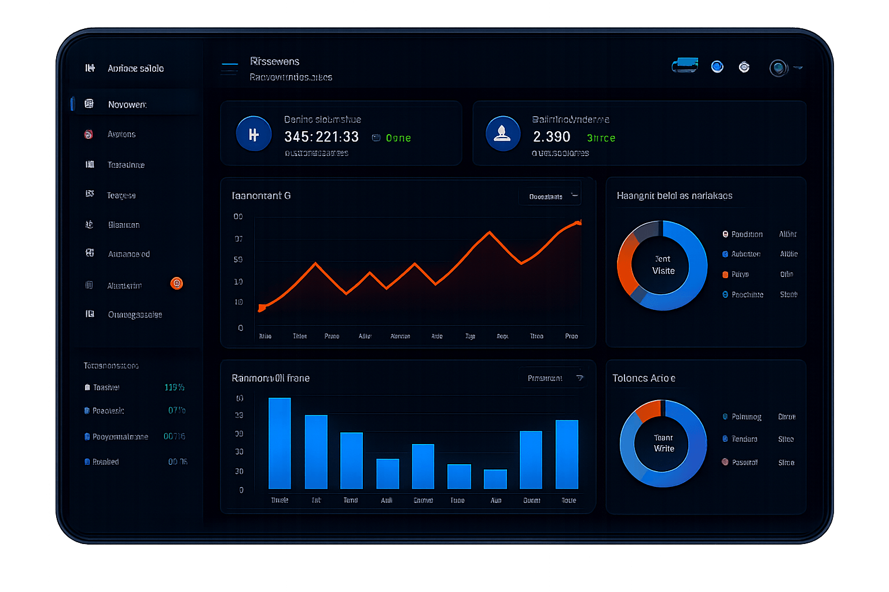

POWER BI · AUTOMATIZACIÓN
Automatización de Reportes en Power BI
Implementé un script en Python conectado a SQL Server, ejecutado cada 30 minutos mediante una tarea programada en un escritorio remoto. Posteriormente, configuré la actualización automática en Power BI para mantener los reportes en línea con la base de datos.
Ver proyecto